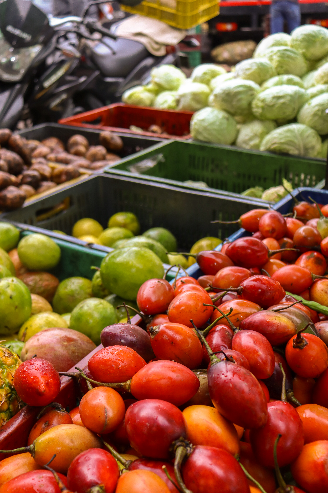

Donde lo cotidiano conecta el campo con la vida en el barrio

Entre estantes llenos, conversaciones breves y manos que eligen, la vida del barrio se mueve todos los días. Cada tienda es más que un punto de compra: es un lugar donde circulan historias, confianza y saberes cotidianos.
En Dosquebradas, el día empieza antes de que salga el sol. Las tiendas se llenan poco a poco de colores, olores y voces. Aquí no solo circulan alimentos, también pasan historias, relaciones y formas de vivir.
Cada producto trae consigo un recorrido, y cada tienda es un punto de encuentro donde lo cotidiano cobra sentido.
Este proyecto se construye desde las voces del barrio desde quienes abren la tienda cada día y quienes la hacen parte de su rutina. Aquí, lo cotidiano también cuenta historia.